2026
Juin

Mai
-
18 —
💖 Mes séries préférées
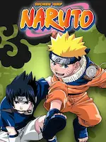
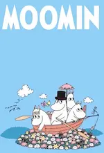
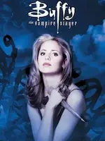
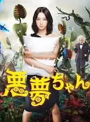
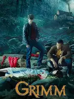
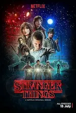
♡ Naruto, ♡ Les Moomins, ♡ Buffy contre les vampires, ♡ Akumu chan, ♡ Grimm, ♡ Stranger Things, ♡ Breaking Bad, ♡ Mr. Robot, ♡ Madame est servie, ♡ 9.1.1 -
17 —
Dernières séries vues
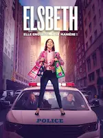
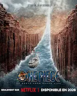
Lucifer, Elsbeth, One Piece (saison 2) -
17 —
Drames, animation et horreur
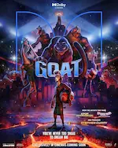
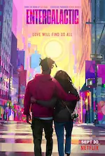
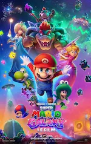
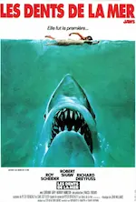
TKT, The Drama, Goat, Entergalactic, Super Mario Galaxy - Le film, Les dents de la mer -
17 —
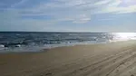
Excursion au Grau-du-Roi du 07/05/2026 au 09/05/2026 -
16 —
Bandes dessinées et roman jeunesse
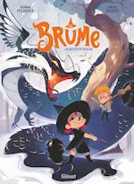
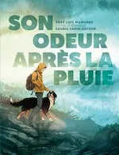
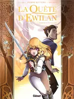
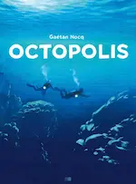
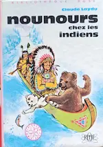
♡ Brume (Jérôme Pélissier et Carine Hinder), ♡ Son odeur après la pluie (José Luis Munuera), La quête d’Ewilan (Lylian et Laurence Baldetti), Octopolis (Gaétan Nocq), Nounours chez les indiens (Claude Laydu) -
10 —
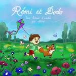
Rémi et Dodo, nouvelle illustrée pour enfants -
10 —
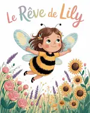
Le rêve de Lily, court texte pour enfants
Avril
-
19 —
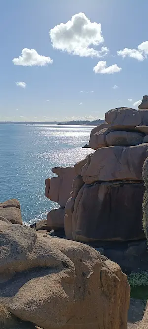
Vacances à Perros-Guirec du 12/04/2026 au 18/04/2026 -
02 —
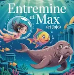
Entremine et Max (et Jojo), nouvelle
Février
- 20 — Que devient Samare ?
-
16 —
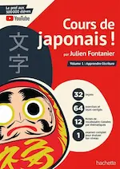
Où j’en suis dans mon apprentissage du japonais -
14 —
Romans policier, psychologique, historique, mythologique et bandes dessinées
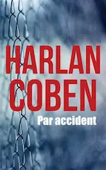
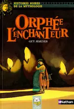
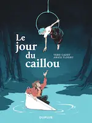
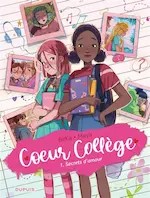
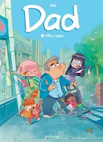
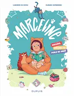
Par accident (Harlan Coben), Il existera toujours un chemin (Bruno Combes), Petit pays (Gaël Faye), Orphée l’enchanteur (Guy Jimenes), ♡ Le jour du caillou (Véro Cazot et Anaïs Flogny), ♡ Cœur collège (Béka et Maya), Dad (Nob), Marceline (Claude Combacau et Lorenza Di Sepio) -
07 —
Découvertes de nouvelles séries
♡ Ted Lasso, Seul face au bébé, Bêtes de flic
-
07 —
Comédie, animation et thriller
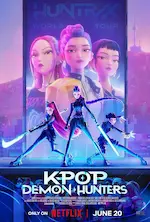
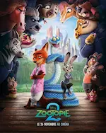
Anaconda, ♡ K-POP Demon Hunters, ♡ Zootopie 2, La femme de ménage
Janvier
-
08 —
Découvertes de séries et retour dans le Monde à l’envers
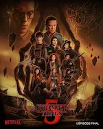
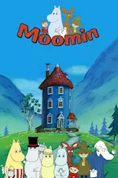
Superman & Lois, Shrinking, ♡ Stranger Things, ♡ Les Moomins -
08 —
Thriller, autobiographie, SF, fantastique, tranche de vie
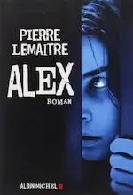
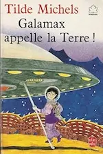
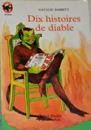
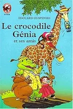
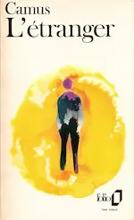
Alex (Pierre Lemaitre), Amkoulell l’enfant peul (Amadou Hampaté Bâ), Galamax appelle la Terre ! (Tilde Michels), Dix histoires de Diable (Natalie Babbitt), Le crocodile Génia et ses amis (Edouard Ouspenski), L’étranger (Albert Camus) -
08 —
Nouveaux Poneys de Noël
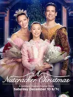
La chance passe toujours à Noël, ♡ Papa par intérim à Noël, ♡ La recette d’un Noël parfait, La ballerine de Noël, La danseuse étoile de Noël, ♡ Les couleurs de Noël, Mission Joyeux Noël, Tinsel Town, Merv, ♡ Passion Noël -
08 —
Autres films : SF, comédie et action
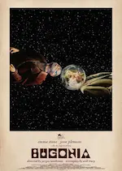
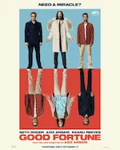
Ick, The Astronaut, Y a pas de réseau, The Family Plan 2, Bugonia, Good Fortune, Carry-On